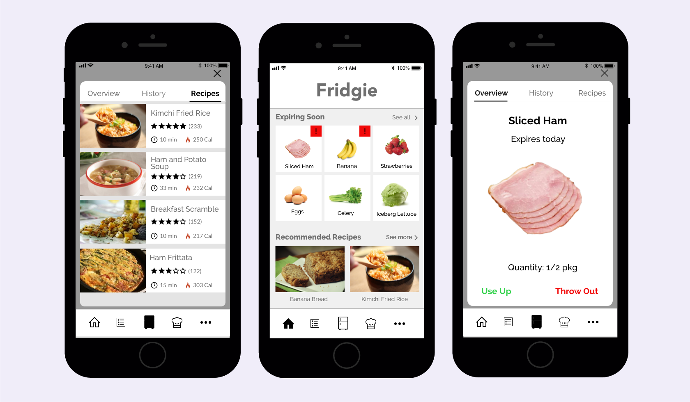
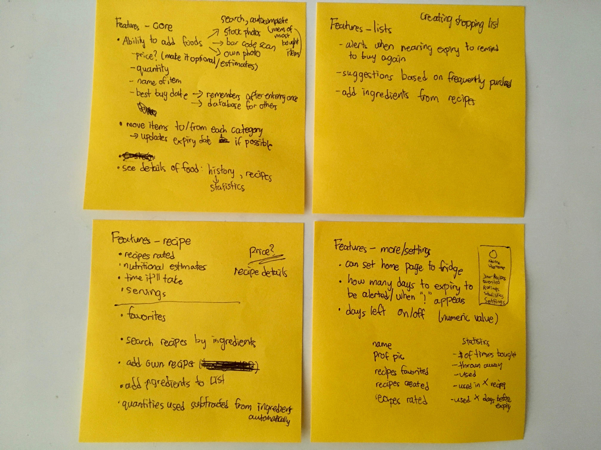

Fridgie: Refrigerator Tracker
Have you ever found something rotting in the back of your refrigerator? Whether it is due to forgetfulness or thinking a food lasts longer than it does, many people have probably experienced this. Fridgie is a prototype app that helps you keep track of what is in your refrigerator, and figure out what you can make with those ingredients. I worked on this project individually over the course of about weeks.
User Research
Initially, I was interested in the food habits of others. Here are some of the questions I asked.
- Do you usually eat out, order food delivery, eat pre-packaged foods, or cook your own food? Order those options from most to least used.
- Why do you eat out/order food delivery/eat pre-packaged foods/cook your own food (depending on the participant’s most often food source)?
- Why don’t you usually eat out/order food delivery/eat pre-packaged foods/cook your own food (depending on the participant’s least often food source)?
- Is there anything you would change about your food lifestyle? Why/why not? What would you change?
- Do you plan out your meals? Why or why not?
- How do you decide what to eat?
I interviewed five other students. Two of the participants usually eat out, one usually orders food delivery, and the other two usually cook their own food.
The participants who don't usually cook on their own said that they want to cook more often, citing price and health reasons. When I asked why they don't usually cook, they all said that they were busy, but more specifically they:
- Don't know how to get started with looking for recipes
- Don't think about food until they get hungry, and by then they don't want to spend the time and energy to cook.
- Buy ingredients, but don't know what to use those ingredients for, and so the ingredients go bad and it is wasteful.
As for the participants that usually do cook on their own, they wished for a more efficient and streamlined process for planning their meals. This includes
- Wanting to be more organized so that they know what they have at hand
- A method of looking up recipes that isn't just Googling "recipes that use [ingredients they already have]"
- A way to save and search through recipes they came across
Personas
Based on my user research, I realized two personas to focus on:
- Persona 1 "Healthy hustler": Busy people who do not want to plan meals in advance but still want to eat healthily.
- Persona 2 "No-nonsense planner": People who want to plan their meals and effectively search for new recipes.
Persona 1 needs a quick and effortless way to keep track of what food they have, what the nutritional value of food is, and look for recipes that use the foods they have on hand.
Persona 2 needs a streamlined way to search for recipes using items they already have, and to save recipes they have made or want to make in the future
Features List
Using my personas as a guide, I brainstormed a list of possible features. My main categories of features include core features, and list/recipe features.
For the core features, I noted that an area of similarity between the two personas is that they both want to keep track of what they have, so I decided to focus on making that information easiest to access. I also decided to show expiry dates as a quick way to prioritize what foods to use first, as well as address the food waste point brought up by non-cookers in my user research.
In order to streamline the process of looking for recipes, which also benefits both personas, I decided on such features as:
- ability to search by multiple ingredients
- quantities subtracted from ingredients when the user uses a certain recipe
- searchable favorites
- ability to add recipes listed on a recipe page directly to a shopping list
For non-planners in particular, I felt that the task of adding the foods that they have or are going to buy would be too much of a hassle, so options to scan the barcode of food is an important feature.
Initial Concept Sketches
Keeping my feature list in mind, I sketched a concept map of the app.

Prototype
I then decided to jump into prototyping. Below are some walkthroughs of the main functions of this app.
Main Screen
The main screen shows an overview of food that is about to go bad. The user can choose "Use" or "Discard" on the food overview screen, or look at history of use and recipes that use that food.
Categories
The user can keep track of what food they have on hand in their refrigerator, freezer, or pantry.
Search by Ingredients
Users can search by selecting items that they have and want to use up. This helps to streamline the user's recipe searching experience.
Barcode Scan
The user can scan barcodes of items to quickly add items to their foods list.
Recipes Page
A dedicated recipes page shows recommended recipes based on ingredients the user has or has frequently used. Each recipe is rated and reviewed.
Add Ingredients to List
When the user sees a recipe they want to make, they can see what ingredients they have and choose to add the ingredients they don't have to a shopping list.
Reflections
In this project, it was challenging to figure out how to fit all the features together. For example, my recipe search page looks similar to the page where the user has all their foods. I think that each of the features are solutions to separate problems, but as a whole, could use better organization.
If I were to do this project over again, I would probably want to spend more time planning the app. After doing user research, I noted themes that came up repeatedly, and created a list of features that I thought would meet user needs. I then did concept sketches to figure out the flow of the app. I think I would have wanted to get feedback on the concept sketches as that would have helped me uncover issues in organization.